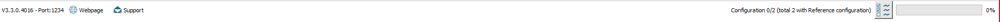
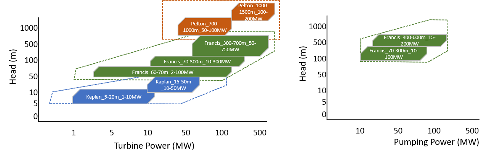
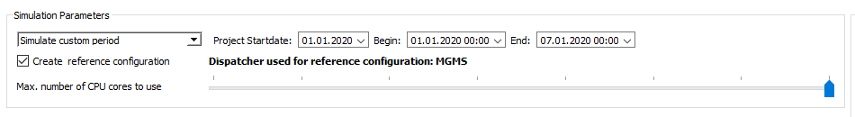
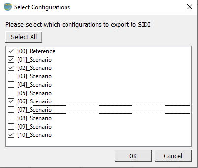
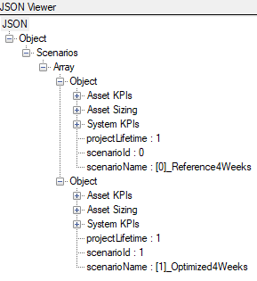
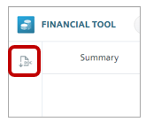

PSS®DE (Power System Simulator for
Distributed Energy) is a tool that Siemens has specifically developed for the sizing and evaluation
of Distributed Energy Systems (DES). Some functionalities of the tool are only available to employees of Siemens AG or Siemens Energy.
These functionalities are described in this Help document.
Imports a (correctly formatted) PVSyst or HelioScope export with an
(optional) associated Meteonorm file.
Note: As a guideline, HelioScope is recommended to be
used for pre-qualification, opportunity and non-binding Solar PV simulations.
PVsyst
can be used for all kinds off simulations from pre-qualification up to binding
guarantees.
If the Meteonorm file is not provided, then the PVSyst data is imported as an hourly
time series. If the Meteonorm file is provided, it is assumed that the PVSyst/HelioScope
calculation was carried out on Meteonorm data and the provided Meteonorm file is the
interpolated 1 minute resolution file from the same source. During the import, the
time-series are created and interpolated.
Note: The imported data is normalized (divided) and
then re-multiplied by the peak power. This allows for easy scaling if different
variations of PV plants are simulated.
A PV plant is added to the equipment tab and automatically linked to
the associated time-series.
Imports a Decarbonization Study project defined as JSON.
The user has to choose a .json-file that was generated by another tool such as the SIDI
data collector. This file-based interface to ISED is able to import:
Loads
Assets for the Reference System
Assets for Opportunities
Timeseries
Fuels
Project Data
All load and asset types that are available in Decarbonization Study can
be extracted from JSON. Please not that the following data can currently not be
described as JSON:
Decarbonization Study simulation settings
Demand Charges
A detailed description of the JSON import interface as well as an
example file can be found here.
Status Bar
The status bar contains:
Version number When filling bug reports or giving
improvement suggestions to the support, this number should always be attached.
Support This guides the user to report problems via
email. This button should open the default email application and an information
popup. If the default email application fails to open up, please follow the
instructions in the popup; otherwise click "OK" and close the popup.
Progress bar The progress bar shows the current
simulation progress in terms of the configurations, which were already calculated.
It does not display progress within a configuration, i.e. a project with only one
configuration will go immediately from 0/1 to 1/1.

Status Bar
User Interface Basics
Asset Library
Asset Library Section
In the Asset Library section, there are two buttons:
Add asset... Allows a user to load a asset from
file.
Remove Removes an asset from the library in the
current
session.
Hydroelectric
Hydroelectric Terminology
Schematic Hydroelectric with Its Elementary Constituents and Flow
Directions
The height difference between the upper reservoir and the water outlet
is
called the head. Gross head is the height difference between the upper and lower
reservoir water
surfaces. Net head is the gross head reduced by the head loss occurring in the penstocks
and
headrace tunnel due to friction effects.
A penstock is a pipe used to transport water from the upper reservoir
to the
turbine.
Note: The penstock is normally constructed at an angle,
so it
is longer than the head.
A headrace might be needed to transport energy in a horizontal
direction from
the upper reservoir to the penstock inlet.
A hydro-turbine does not have a direct relationship between power and
water
flow (e.g. it is not like a heat balance table for a gas turbine). Instead a hill chart
is used
to represent the relation between water flow rate and mechanical power for varying
generator
rotational speed at a certain guide vane opening angles. The hill chart contains
experimental
data obtained by the turbine manufacturer. The sizing algorithm based upon these hill
charts is
dependent upon some scaling factors and some discrete parameters (for example the number
of pole
pairs) it is therefore not always possible to exactly meet a desired rated power. The
closest
value that can be achieved is instead used within the model. The rationale for choosing
this
sizing algorithm is to ensure that the calculation of losses during operation is
accurate.

Head (M) vs Power
(MW)
for
hydroelectric assets
As shown in figure above, the 3 main types of hydroelectric turbines
(Kaplan,
Francis, Pelton) are modeled. All of them can be used for the conventional hydroelectric
and the
Francis turbines are also used for the pumped hydroelectric as PumpTurbines. All
turbines are
capable of converting the flow of water down an incline into rotational energy (which
can then
be converted into electrical power with a generator), only a PumpTurbine is capable of
running
backwards and pumping the water back up the incline.
Turbines are defined by a range of parameters, as described in the
following
sections, but non-specialists only need to consider a few key important parameters early
in the
sizing process (listed in next section: Simple Setup). Each turbine is defined by its
Best
Efficiency Point (BEP) , a point at which the turbine has been rated by
the
manufacturer, and is guaranteed to meet a given performance. This BEP defines the
Head at
rated point for turbine and Rated power per turbine. For a PumpTurbine, a
second
BEP is included for the reverse direction. This is defined by the Head at rated point
for
pump and Rated Power per pump .
In the figure above, the general validity range for head versus power
is shown
for each turbine. Note that the borders drawn are only meant to be indicative for the
early
design process, and are not hard-constraints. For example, in the asset
Kaplan_5-20m_1-10MW, a minimum and maximum head of 5 and 20 meters correspond to a
minimum and
maximum power of 1 and 10 megawatts. However, the asset may be capable of producing
slightly
more than 10MW at 20 meters head depending on the exact project layout, or it may be so
that
even 10 MW is not quite achievable.
Simple Setup
After selecting a turbine from the library with the correct head and power,
a user
must define the following parameters:
1. Head at rated point for turbine
2. Minimum/maximum upper reservoir level in meters above sea level
3. Minimum/maximum lower reservoir level in meters above sea level (for conventional
hydroelectric the difference can be 0m)
4. Length of penstocks
5. Length of headrace tunnel (this can be 0m)
6. Rated power for each turbine
7. Number of penstocks
8. Number of turbines per penstocks
When the project is saved, if the diameter for the headrace and penstocks
are not
suitable, then the user will receive a popup with a suggestion for minimum/maximum diameter
of
penstocks. The user should set the diameter value between the suggested minimum and maximum.
Conventional Hydroelectric
Conventional Hydroelectric in Topology View
Overview - "What is this asset"
Conventional hydroelectric power uses the potential height energy of water
to
generate electricity. Water is fed from a storage reservoir to a water turbine that turns an
electrical generator. The amount of energy produced is calculated from the height difference
between
the storage reservoir and the water outlet, and the amount of water that flows, and the
efficiency
of the turbine and generator.
Library Assets
There are five types of library elements for the Conventional
Hydroelectric
Francis_300-700m_50-750MW
Francis_70-300m_10-300MW
Francis_60-70m_2-100MW
Kaplan_15-50m_10-50MW
Kaplan_5-20m_1-10MW
The choice of turbine is essentially determined by the
project′s head as shown in the following diagram. A model has been
provided for
the Francis turbine as this covers the expected range of DES projects. If PSS
®DE
warns that the turbine type is not appropriate please contact PSS®DE
support.
Application Range of Hydroelectric Turbine [Giesecke, J. et al.
(2005):
Wasserkraftanlagen, 5. Aufl., Heidelberg: Springer]
Parameters - by category
Economics
Price matrix
See Price Matrix under "Special Parameter Types".
Construction cost per meter penstock [EUR/m]
Civil cost per meter penstock.
Other Construction cost [EUR]
Civil cost that includes for example the cost for building a dam, machine house,
etc. If no
other information is available, then a rule of thumb is to use 8 x the capital cost.
Renewable incentive [EUR/kWh]
Economic incentive for the energy produced by the hydroelectric, in case it is
considered
renewable.
Reactive Power Generation/Compensation [EUR/h]
Hourly revenue from reactive power generation and compensation.
Synchronized condenser mode [EUR/h]
Hourly revenue from a turbine running in synchronized condenser mode.
Number of running synchronized condenser machines [-]
Number of turbines running in synchronized condenser mode.
Losses in synchronized condenser mode [% of rated power]
Percentage losses while turbines running in synchronized condenser mode.
Reservoir
Area of upper reservoir [m²]
Surface area of upper reservoir assuming the volumetric shape of the reservoir
being
cylindric.
Initial water level of the upper reservoir [m]
The initial water level of the upper reservoir.
Inflow to upper reservoir [m³/s]
Inflow from a river or rainfall to the upper reservoir.
Maximum water level of upper reservoir [m]
Maximum water level of the upper reservoir that must not be exceeded.
Minimum water level of upper reservoir [m]
Minimum water level of the upper reservoir that must not be fallen below.
Area of lower reservoir [m²]
Surface area of lower reservoir assuming the volumetric shape of the reservoir
being
cylindric
Initial water level of lower reservoir [m]
The initial water level of the lower reservoir.
Inflow to lower reservoir [m³/s]
Inflow from a river or rainfall to the lower reservoir.
Evaporation from lower reservoir
[m³/s]
Evaporation at the surface of the lower reservoir.
Maximum water level of lower reservoir [m]
Maximum water level of the upper reservoir that must not be exceeded.
Minimum water level of lower reservoir [m]
Minimum water level of the lower reservoir that must not be fallen below.
Number of rotating machines installed at the bottom of a penstock.
Efficiency scaling factor [-]
Scaling factor to customize the total efficiency of the plant.
generator efficiency [-]
Ratio between electrical and mechanical power at generator shaft.
turbine efficiency [-]
Efficiency of one turbine
Rated power per turbine [kW]
Rated power of one turbine
Head at rated point for turbine [m]
The head at which the turbine rated power is reached.
Minimum flow per turbine [%]
Minimum percentage of flow rate for generating. Set to 40% by default.
Ramp rate of turbine in percent of prime power
[%/s]
Turbines can ramp up instantaneously. Set to 1 by default.
pump efficiency [-]
Efficiency of one pump
Rated power per pump [kW]
Rated power of one pump.
Head at rated point for pump [m]
The head at which the pump rated power is reached.
Minimum flow per pump [%]
Minimum percentage of flow rate for pumping. Set to 40% by default.
Ramp rate of pump in percent of prime power [%/s]
Ramp rate of pump in percent of prime power.
Stability (Grid, OR)
Line Frequency
Frequency of the grid depending of the location. In large parts of the world this
is 50 Hz,
in the US and some parts of Asia this is 60 Hz
Grid forming factor [pu]
The relative amount of load the hydroelectric can sustain in terms of grid
stability. The
value is given as a factor of the maximal power of the hydroelectric. 2 is usually
considered conservative and 4 aggressive.
Short circuit current [A]
Amount of short circuit current that can supplied by the genset
Failure fraction
The fraction in per unit in which the Hydroelectric fails, usually 1.
Losses
Operational losses [kW]
Losses incurred during use. The value is absolute and does not scale with the genset
size
Hour of day losses [kW]
Losses as function over time in a day
Permanent losses [kW]
Losses are absolute and not scaled with size.
Time
Lifetime [h]
Lifetime, i.e. the time between replacements in years.
Installation delay [y]
The time delay (in years) after simulation start at which the asset is installed.
CAPEX is
booked and OPEX start after this delay. A delay of 5 years means that the unit
starts
producing at the beginning of year 6.
Maintenance Schedule
The maintenance schedule defines how many rotating machines are allowed (or
required) to
run at a given time.
Replacement Strategy
See Replacement Strategy under "Special Parameter Types".
Explanation for Hydroelectric Model
The model includes the following features:
User defined water inflow and evaporation to the upper and lower reservoir
Reservoir areas and minimum and maximum limits for its water level. Note that the
geometry
of a reservoir has been simplified to a cylinder so that the water lever is linear
in
relation to how full the reservoir is.
The generated hydroelectric power is depending on the gross head, head loss
occurring in
headrace tunnel and penstock, turbine and generator efficiency
The stored energy for pumped hydro is dependent on the gross head, head loss
occurring in
headrace tunnel and penstock, pump turbine and generator efficiency operating in
reverse
mode, or pump efficiency
Losses dependent on headrace tunnel and penstock material type and geometry
(diameter and
length)
Capital costs associated with:
general construction e.g. dams, machine houses, etc.;
penstock(S) -
dependent on length
and
construction type; and
electricity generation equipment e.g. water turbines, generator, switch gear,
transformers,
control equipment.
Reactive power mode and synchronous condenser mode
Modelling concept:
A single headrace tunnel can be used to bridge the horizontal distance between the
reservoir and the penstock(S)
One or multiple penstocks can be configured
Each penstock can have one or multiple Francis turbines connected to it
Reduced Model of a Hydroelectric as General Pipe Configuration (Q =
flow, K =
resistance coefficient, G = Group of water turbines)
For the general system configuration, the model in PSS
®DE
assumes
one common headrace tunnel HTC
multiple (in this case 3) individual penstocks PSI with identical resistance
coefficient KI
Groups of rotating machines (turbine and generator) G1, G2, G3. A group can have 1
or more
turbines; note the assumption is made that all groups must have the same number of
turbines.
Setup a Hydroelectric
The parameters for a hydroelectric system are very project specific.
PSS
®DE has been developed to allow a simple configuration when little
technical
information is known. More detailed modelling is possible if the appropriate input data
is
available. Details on advanced setup for hydroelectric model can be find here.
Using a Project Specific Hill Chart
If a project specific hill chart is available, then a customized
hydroelectric
asset can be created. The data must be provided in the format defined in link. Please contact the
support
desk to for further information.
Pumped Hydroelectric
Pumped Hydroelectric in Topology View
Overview - "What is this asset"
In systems with suitable equipment, a second lower reservoir can be used
at the
water outlet of the turbine to store water. In addition to generating electricity, the flow
of water
can be reversed so that energy can be stored by pumping water back up to the upper storage
reservoir. In this case either the same turbine might be used in reverse with a different
efficiency, or a separate pump might be needed.
Library Assets
There are one type of library element for the Pumped Hydroelectric
FrancisPumpTurbine_70-300m
A model has been provided for the Francis turbine as this covers the
expected
range of DES projects. If PSS®DE warns that the turbine type is not
appropriate
please contact PSS®DE support.
Parameters - by category
Economics
Charging incentive [EUR/kWh]
The upper reservoir increases volume by water being pumped from the lower to the
upper
reservoir only when power is available at cost below the value of the charging
incentive.
For further information see also here.
Heat Balance Table for Heat Pumps
A table defining the thermal power generated by electrical
power (and
thermal input). Each row defines a performance set point at different partial
loads. The
first column defines the amount of required input electrical power, while the
second
then defines the corresponding thermal output (Hot Water or Steam).
If the heat pump is not defined as a Standard Heat Pump, then there will also be
a
column for the provided cooling power of the unit or the required thermal input
(hot
water or steam). This means that as a Dual Heat Pump the unit must provide
cooling power
in order to be able to provide warming power. For Booster Heat Pumps a thermal
input
(hot water or steam) is required. See also: Heat Balance Table under "Special Parameter Types".
As defined in the Model section, the efficiency of a Heat Pump changes as the
cold
(source) and hot (outlet) temperatures vary. To account for this effect within
PSS
®DE, an excel tool is provided at the download page under:
Important: The table provides 3 rows as inputs,
and an
"Off" row is included internally in the model. You should never set the first
row to
zero. This can lead to strange effects in the model. If you need less points,
then
duplicate the last rows.
Simulate custom period A simulation for a custom period of time
is carried out. In "Project Startyear" one can pick a date since when this project is running.
Installation occurs and capital costs are incurred. In "Begin" and "End" one can select the
start and end date of the simulation. The begin date may not be before the project start year.
Both project start year and begin date must be before the end date. The end date may not be
longer than the project life time.

Create reference configuration If selected, a reference
configuration for post processing is generated by stripping all assets labeled as non-(prior)-
existing from the configuration. Dispatcher used for reference configuration is shown on the
right side.
Max. number of CPU cores to use This slider determines how many
configurations are calculated in parallel.
Note: If you want to execute PSS®DE in the
background and still use other CPU-intensive applications such as Excel, it might be
advantageous not to use the maximal number.
Export
To financial tool
Exports an input file for the Lahmeyer financial analysis tool for the selected
configuration. The Lahmeyer tool is used for a detailed analysis of a single configuration.
For external tools (json)
This export option is available for dispatch optimization as well as for Decarbonization Study
and writes the simulation results to a .json file. This file can be then imported to
other tools such as the SIDI Data Collector for visualization and analysis of the data. The user can
select the configurations (dispatch optimization) or scenarios (Decarbonization Study) to be exported.

Select scenarios to be exported
The exported file contains the output for all selected configurations/scenarios.
For each scenario the scenario ID, scenario name and project lifetime are given and the scenarios
are divided into three parts:
System KPIs
Asset KPIs
Asset Sizing (only for Decarbonization Study)

Structure of JSON export from Decarbonization Study
The system KPIs include the total values for:
Project TOTEX - Total system cost over project lifetime
Project CAPEX - Initial system investment cost
Project OPEX - Total system operating cost over project lifetime (including O&M, fuel, import
costs...)
Annual Operating Costs - The total system operating cost for the first year
LCoE (Electricity) - The levelized cost of electricity is given by the discounted relative cost
of production of electricity.
Project Carbon emissions - Total tons of CO2 produced over project lifetime
The asset KPIs include the monthly, yearly and
total values for every asset with a rated size > 0:
A detailed description of the JSON export interface as well as an examplary file
can be found here.
Cash flow
Technical KPIs
Every KPI is described by its:
name
kpiClusterType
kpiType
kpiUnit
array of values
In the asset sizing section all assets and loads
of the project are specified by all parameters that are available in Decarbonization Study. This
section is only contained if the export is from Decarbonization Study.
Report Generation
A report generation function is available from the icon on the left toolbar.

Toolbar with button to start report generation
The report generation populates a word template with project data. This template has a
“superstructure” of elements that can be automatically generated. The user can customize which
of these are included in the report using the wizard. It is also able to select which
configurations are shown in the analysis.
The report generation takes several minutes, the report will automatically open in MSWord, and
be saved in the same location as the sproject file. This is a standard MSWord document that can
be modified as needed. Areas that the user needs to change can be easily found by searching for
“xxx”. The links in the document need to be manually updated, if the entire content is selected
(e.g. “Ctrl+A”), then the “F9” key updates the field. A prompt window will open, the user should
update the entire document.